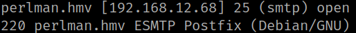
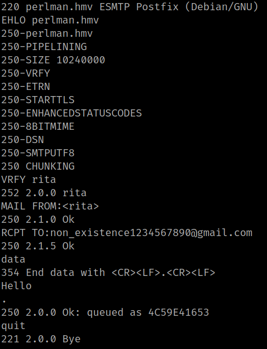
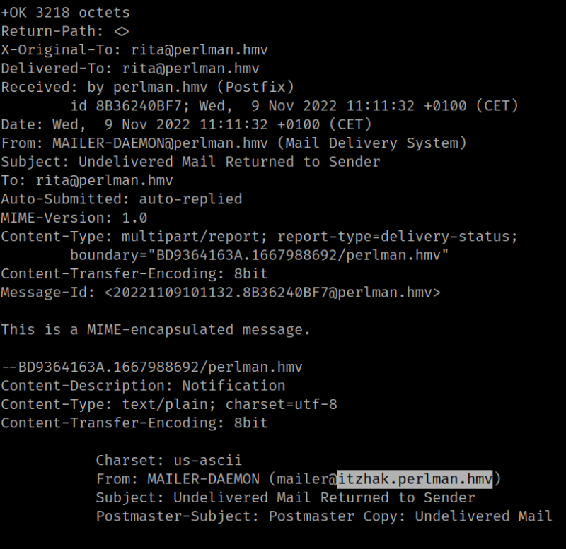
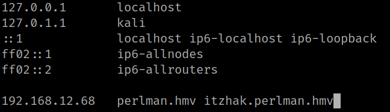

4.3 Send email to rita
Send an email to “rita" so as to get a response from the server with a subdomain.
1. Run the following command.
$ nc -v perlman.hmv 25
Output:

2. Run this commands to send an email (You need Internet connection).
EHLO perlman.hmv
VRFY rita
MAIL FROM:<rita>
RCPT TO:non_existent_user0123456789@gmail.com
data
Hello
.
<Ctrl>+J
quit
Output:

3. Read the response.
$ nc -v perlman.hmv 110
USER rita
PASS <password>
LIST
RETR 1
Output:

You can see there's a subdomain “itzhak.perlman.hmv”.
4. Add the subdomain to “/etc/hosts" on you Kali Machine.
